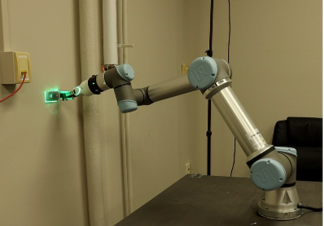
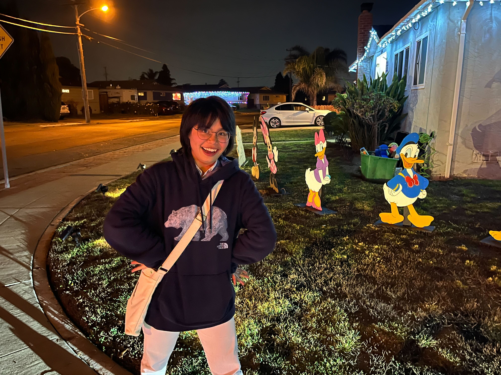
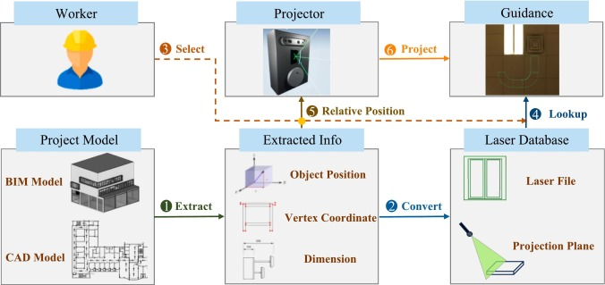
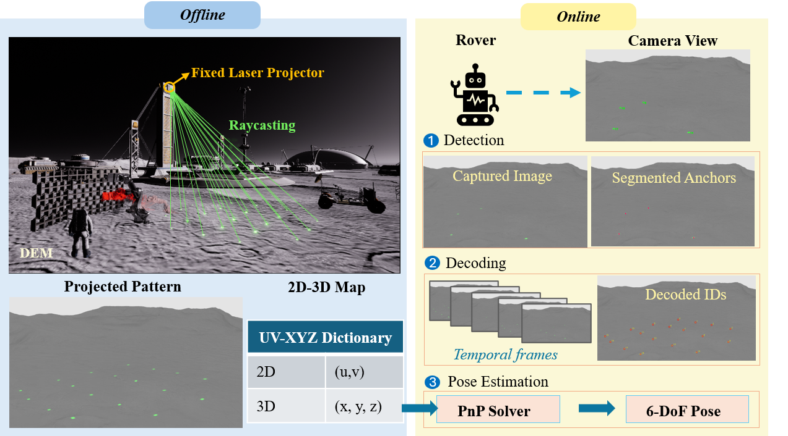
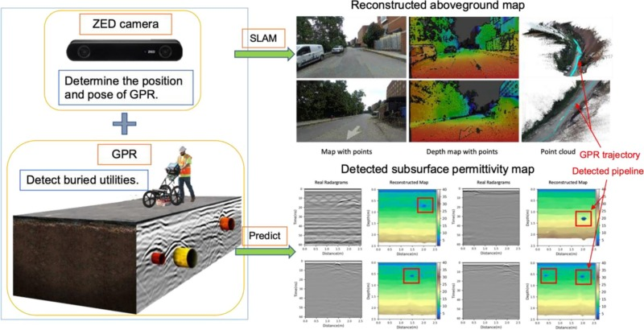

Spatially Grounded Two-Agent Coordination for BIM-to-Field Robotic Bracket Installation
Mengjun Wang, Jing Du, Jiannan Cai, Shuai Li
Automation in Construction — Major Revision
I am a Ph.D. candidate in Civil Engineering at the University of Florida, advised by Prof. Shuai Li.
My research focuses on Physical AI for construction and infrastructure, connecting task-relevant sensing and physical-state estimation, digital-to-physical task grounding and spatial guidance, and adaptive human and robotic execution.
I received M.S. degrees in Civil Engineering and Computer Science from the University of Tennessee and a B.S. in Traffic Engineering from Changsha University of Science and Technology.

My research develops task-grounded Physical AI for construction and infrastructure, with a focus on connecting physical-world understanding, project-specific intent, and human or robotic action.

Mengjun Wang, Jing Du, Jiannan Cai, Shuai Li
Automation in Construction — Major Revision

Mengjun Wang, Jianjun Xu, H. Andrew Lassiter, Shuai Li
Automation in Construction, 2025

Mengjun Wang, Shuai Li, Yunlan Zhang
Journal of Computing in Civil Engineering — In Production

Mengjun Wang, Da Hu, Junjie Chen, Shuai Li
Automation in Construction, 2023
Outside research, I enjoy swimming, badminton, table tennis. I am learning Japanese and cooking.